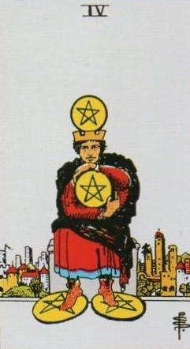
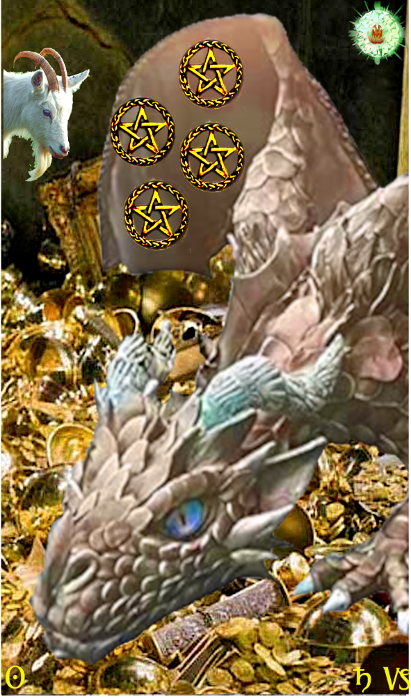
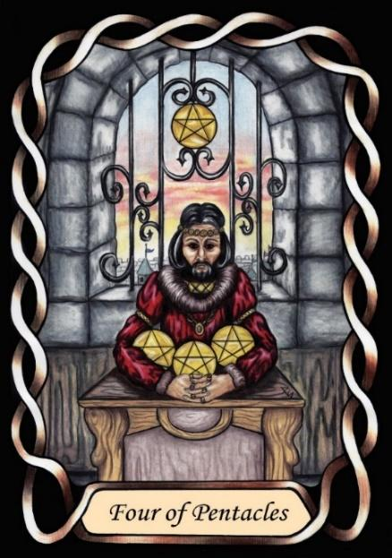

Four of Pentacles



Sign |
|
Ten: career, success |
|
Sign Ruler |
|
Element |
Earth: practical |
Modality |
|
Symbol |
Ram |
Decan |
|
Decan Ruler |
|
Time |
Jan 11 - 20 |
Avarice Capricorn III
A Master in business and career, ruled by Saturn and the Sun, dominates his field of enterprise. He is the Master, and demands respect for that position. He uses his wealth and status to dominate others. He needs to rule like Saturn, and shine forth like the Sun and will be unhappy in life if he cannot. He will never be content to simply be a member of the team.
Alchemically, the Chariot of Saturn is pulled by dragons, indicating intelligence without compassion. There is a strong correspondence therefore between this decan and the television program entitled “Dragon’s Den”, in which punters pitch business ideas to four dragons – Masters of business – in the hope of winning funding.
Goldschneider Personology
For these Capricorns, climbing the ladder of success is less important, but they still have the need to be in charge and to dominate their environment. Members of this decan are more concerned with immediate and practical realities than dreams. Their best tools are often steadfastness and persistence. They are very loyal to their loved ones.
RWS Imagery
A Capricorn-three exhibits a close-held posture regarding his money. He seems untrusting, and afraid of losing his wealth. Thus, he feels the need to maintain tight control (dominance) over what he has.
His castellated crown and red clothing are reminiscent of Solomon in the Justice card, and so may be a reference to wisdom in financial matters.
Pymander Imagery
A dragon indicates Saturnian nature, and sits on a hoard of gold, which is the metal of the Sun. it is a clear reference to the contemporary idiom of Dragons being men of wealth.
Summary
Represents mastery, dominance, and potential greed in career and finance.